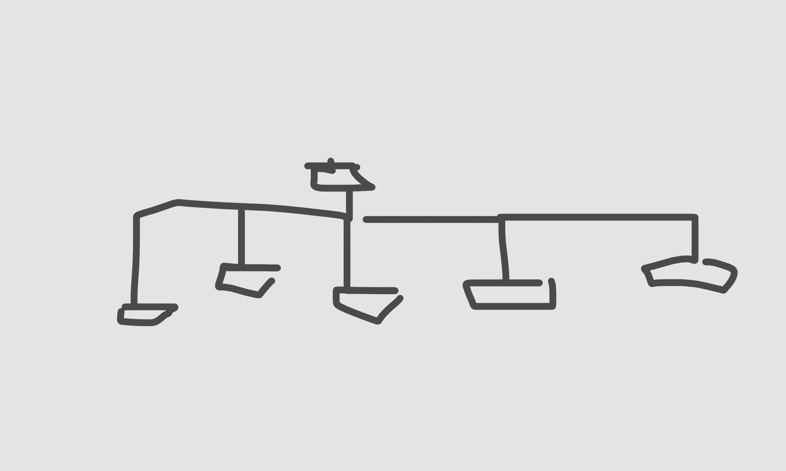
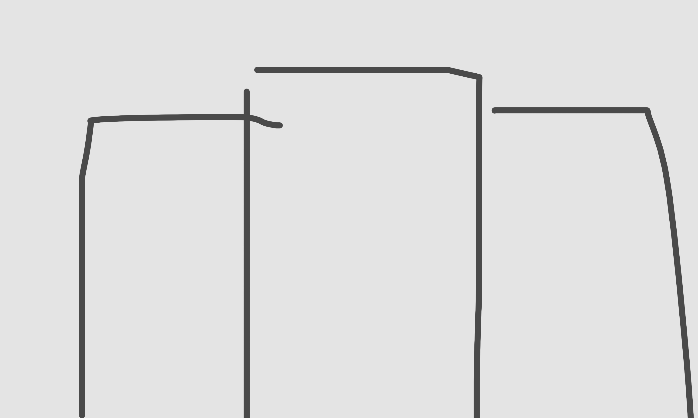
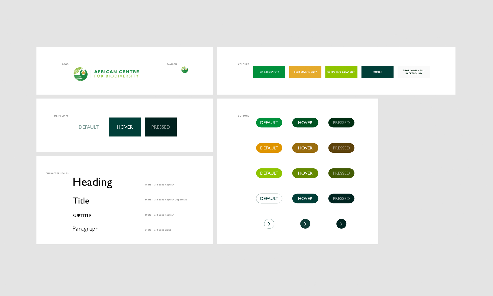

AC Bio
UI-UX Design
Le Centre Africain pour la Biodiversité
AC Bio est une organisation de recherche et de plaidoyer œuvrant en faveur de la souveraineté alimentaire et de l'agroécologie en Afrique, en mettant l'accent sur la biosécurité, les systèmes semenciers et la biodiversité agricole. Ils sont déterminés à démanteler les inégalités et à résister à l’expansion industrielle et commerciale des systèmes alimentaires et agricoles africains.
Un tout nouveau site
Collaborant à nouveau avec PURE Creative Agency, j'ai eu la chance de refondre l'intégralité de l'UX et de l'UI du site internet (qui n'avait pas changé depuis 2008). En partant d'une feuille blanche, nous avons dessiné une nouvelle architecture pour l'ensemble du site puis nous avons proposé aux clients 3 pages d'accueil avec différents look-and-feels (typographies, couleurs). Une fois que le client satisfait, nous avons créé un kit d'interface utilisateur basé sur la page d'accueil retenue, et l'avons appliqué à chaque wireframe, les transformant en maquettes graphiques prêtes à être codées. L'étape suivante, la partie Dev, fut réalisée par Flint Studio.Année
Juin 2022
Read in English 🇬🇧